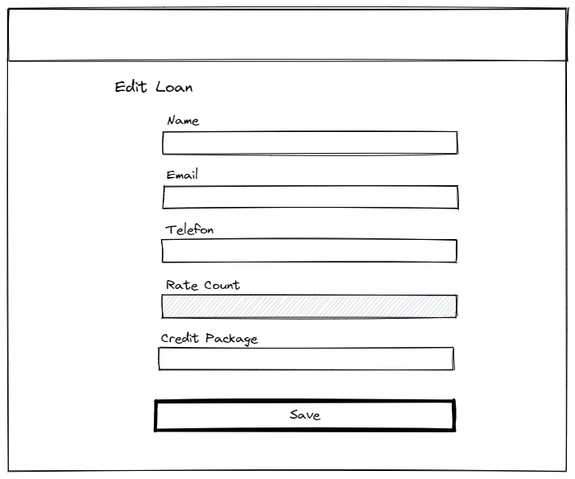
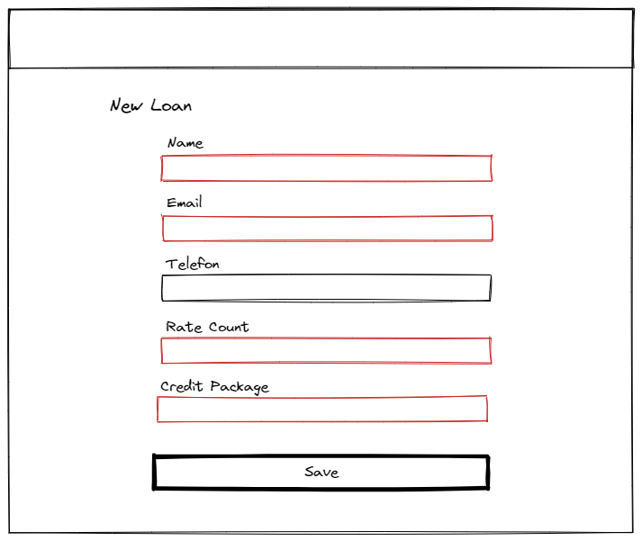
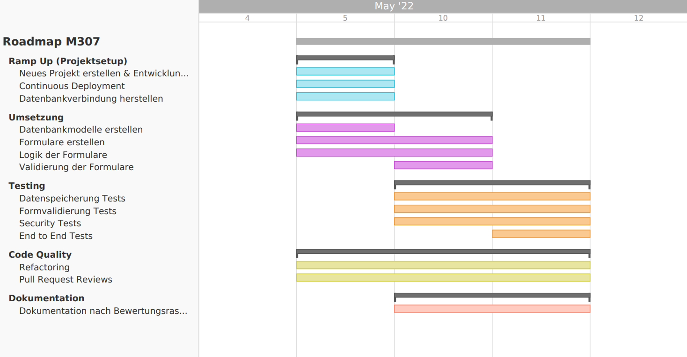

Einleitung
-
Projektname: Kreditverleih
-
Autoren: Enea Krähenbühl, Lian Studer, Kris Huber
-
Repository: GitHub
-
Jira Projekt: 3n3a.atlassiant.net
-
Produktives Deployment: m307.3n3a.ch
-
Dokumentation als PDF: Download PDF
Sitemap
In der untenstehenden Tabelle sind sämtliche Routes ersichtlich, welche für den Nutzer der Seite sichtbar sind. Interne Routes, welche nur PUT oder PATCH Requests erlauben, sind nicht aufgelistet, da sie nur als API Routes dienen.
| Titel | Route | Inhalt |
|---|---|---|
| Startpage | / | Die Startseite mit Navigation. |
| Listing Loans | /loans | Liste aller offenen Kredite. |
| New Loan | /loans/new | Formular zur Erstellung eines neuen Kredits. |
| Edit Loan | /loans/:id/edit | Formular zur Bearbeitung eines existierenden Kredits. |
| Show Loan | /loans/:id | Zeigt die Details eines existierenden Kredits an. |
Formulare
In diesem Abschnitt finden Sie Wireframes, welche als Entwürfe der umgesetzten Formulare dienen. Sie visualisieren mutierbare und nicht mutierbare Felder, beziehungsweise erforderliche und nicht erforderliche Felder, sowie gültige und ungültige Eingaben.
Edit Loan
Die untenstehende Grafik ist ein Wireframe für das Formular zur Bearbeitung einer Kreditverleihe. Das ausgegraute "Rate Count" Feld ist in diesem Formular nicht bearbeitbar. Der "Rate Count" kann nur beim erstellen eines Kreditverleihs gesetzt werden und ist nicht mutierbar.

New Loan
Die untenstehende Grafik ist ein Wireframe für das Formular zur Erstellung einer Kreditverleihe. Die rot markierten Felder sind erforderlich. Das Feld "Telefon" ist optional.

Validierung
| Formular | Feld | Validierung |
|---|---|---|
| Create/Edit Kredit | Name | required, trim, |
| Create/Edit Kredit | required, trim, contains '@' | |
| Create/Edit Kredit | Phone | trim, regular expression |
| Create Kredit | Rate Count | >= 1 and <= 10 |
| Create/Edit Kredit | Credit package | required, kann nur ein gültiges Credit package sein, welches in der credit_packages Tabelle aufgeführt ist |
| Edit Kredit | Status | required, kann nur open oder closed closed sein (enum type) |
Datenbank
In der untenstehenden Graphik ist unsere Datenbank Struktur ersichtlich. Sie besteht aus zwei Tabellen, namentlich "loans", welche sämtliche Kredite enthält und "credit_packages", welche die verfügbaren Kredit Packete enthält.

ORM (Object Relational Mapper)
Unsere Tabellen werden von einem ORM automatisch aus Programmcode generiert. Die Tabellenschemas befinden sich hier. Der ORM braucht zusätzlich zu unseren beiden Tabellen ("loans" und "credit_packages") noch eine eigene Tabelle, namens "schema_migrations", in denen er Schema Migrationen speichert. Sie hat aber ansonsten keine Funktion und kann ignoriert werden.
Datenbank Dump
Um zu veranschaulichen, wie Daten in unserer Datenbank gespeichert werden, haben wir einen SQL Dump mit Beispieldaten erstellt. Die Datei kann in unserer GitHub Repository als Releases gefunden werden. Hier geht's zu den Releases
Testfälle
Manuelle Tests
1. Liste der Kreditverleihen
GEGEBEN SEI Ich bin auf der `/loans` Route
WENN Es Kredite auf in der Datenbank hat
DANN Sehe ich alle Kredite von der Datenbank aufgelistet
2. Details eines Kreditverleihs
GEGEBEN SEI Ich bin auf der `/loans` Route
WENN Es Kredite auf in der Datenbank hat
DANN Sehe ich die Informationen in der Liste
3. Schliessen eines Kreditverleihs
GEGEBEN SEI Ich bin auf der `/loans` Route
WENN Es Kredite auf in der Datenbank hat
DANN Wenn ich auf den Close Button drücke, kommt ein bestätigungs Dialog, wenn ich bestätige wird der Kredit geschlossen.
4. Bearbeiten eines Kreditverleihs
GEGEBEN SEI Ich bin auf der `/loans` Route
WENN Es Kredite auf in der Datenbank hat
DANN Wenn ich auf den Edit Button drücke, werde ich auf das editierungs Formular weitergeleitet
5. Hinzufügen eines Kreditverleihs
GEGEBEN SEI Ich bin auf der `/loans` Route
WENN Ich auf den `New Loan` Button drücke
DANN Öffnet sich ein Formular, in welchem eine neue Hypothek erstellt werden kann
6. Falsche Route wurde ausgewählt
GEGEBEN SEI Ich verbinde auf eine falsche Route
WENN die Route nicht im Router enthalten ist
DANN werde ich ohne Fehlermeldung auf die Dashboardseite zurückgesendet
Automatisierte Tests mit Cypress
Zusätzlich zu unseren manuellen Tests, verwenden wir das Testing Framework Cypress, um unsere Seite automatisch zu testen. Sämtliche Testfälle sind hier in unserer GitHub Repository zu finden. Die Tests sind im Code bereits dokumentiert. Sie werden automatisch bei jedem Pull Request und bei jedem Push auf den master Branch ausgeführt. Ob die Tests erfolgreich sind oder nicht, ist am CI Badge im README ersichtlich.
Der Continuous Integration Status Badge sieht wie folgt aus:

Roadmap
Das untenstehende Gantt Diagramm visualisiert unsere Arbeitseinteilung über die drei Tage, an denen wir an unserem Projekt gearbeitet haben. Es ist zu beachten, dass dieses Diagramm keine User Stories und deren Roadmap enthält, sondern ausschliesslich grössere Aufgabenblöcke.
